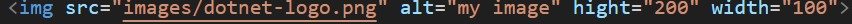

self closing tag will do not have any closing tag it will have only opening tags
some of the example of self closing tags are img,br,hr
img tag:img src="image url" alt="alt is used if image is not found" below is example
br tag is used to break the row or it will go to next line. will works as enter key
hr tag is used to horizontal rule or line